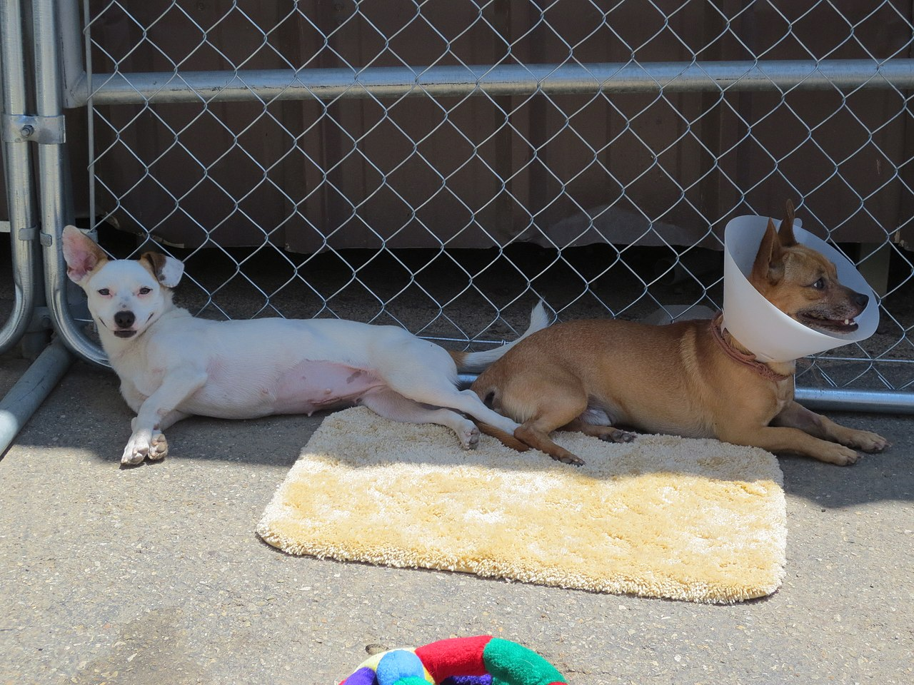

Requirements for Adoption
- Must be at least 18 years old.
- Must have valid photo ID

Some Things to Consider
- Vaccinations – For the safety of your new and existing pets, we recommend that all other household pets are current on vaccines two weeks before welcoming a new animal to your home.
- A Fenced Yard - While big, secure yards may be recommended for some dogs, there are many other dogs that would be perfectly happy in an apartment or home where exercise is obtained from walking or jogging on leash. In fact, leash-walked dogs that get 3 to 4 trips outside per day are often happier than dogs left unattended in a back yard.
- Children – Some rescues do not adopt to families with small children, but we welcome families! We have many pets that will be great family companions for kids of any age who are supervised and taught to treat pets gently. Please keep in mind that we may decide that certain pets aren’t best for small kids due to temperament. These decisions are always made with child and pet safety in mind.
- Indoor vs. Outdoor Situation – We strongly believe that pets are happiest, healthiest and safest when they are welcomed indoors as household companions. Pets allowed outdoors unsupervised are exposed to risks such as disease, theft, escape, auto accidents, wildlife and more. If you still want to keep a pet outdoors, please contact us for suggestions or options.
- Declawing – We do not declaw cats and do not advocate the procedure due to the physical and psychological impact it has on cats. There are several humane and simple alternatives to declawing including trimming the nails, providing a scratching post, or using products such as soft nail caps that will help eliminate the destructive capabilities of claws and keep your cat happy.